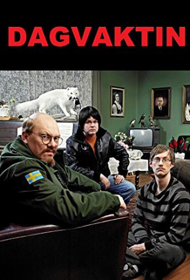
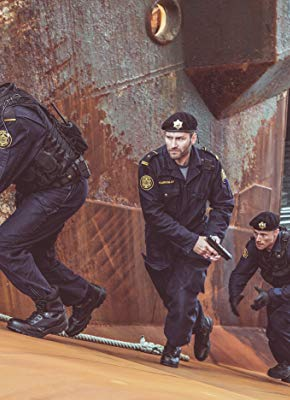

Alternativ: Dagvaktin (Originaltitel)
 
 IMDB-Wertung: 8.1 / 10
IMDB-Wertung: 8.1 / 10  Metascore: 0
Metascore: 0 
“Die Tagschicht” ist der zweite Teil der Serien-Trilogie über drei ganz unterschiedliche Isländer, die nicht miteinander, aber auch nicht ohne einander können. Nach ihrem Scheitern in ihren bisherigen Jobs treffen Georg Bjarnfreðarson, Ólafur Ragnar und Daníel unverhofft als Angestellte in einem Hotel in den abgelegenen Westfjorden wieder aufeinander. Unter ihrer derben Chefin Gugga verteilen sich ihre Rollen neu. Doch das geht nicht lange gut… Die Trilogie wird fortgesetzt mit der “Knastschicht”.
Jahr: 2008
Dauer: 24 Minuten
FSK:
Land: Island Studio: Stöð 2Tonspuren:
Untertitel: Deutsch,
Auflösung: SD (720x576) Größe: 241 MB
Genre: Drama, Komödie, TV-Serie
Regisseur: Ragnar Bragason
Drehbuch:
Soundtrack:
Darsteller:
 Jón Gnarr als Georg, 11 episodes, 2008
Jón Gnarr als Georg, 11 episodes, 2008 Jörundur Ragnarsson als Daníel, 11 episodes, 2008
Jörundur Ragnarsson als Daníel, 11 episodes, 2008- Ævar Þór Benediktsson als Óðinn, 6 episodes, 2008
- Ingibjörg Reynisdóttir als Kvennfélagskona 3, 4 episodes, 2008
- Björk als Sérstakur gestur, 1 episode, 2008
-  Hilmir Snær Guðnason als Brynjólfur Gunnar, 1 episode, 2008
- Sarain Boylan als Kona Brynjólfs, 1 episode, 2008
- Sigurjón Kjartansson als Olgeir, 1 episode, 2008
 Sveinn Ólafur Gunnarsson als Kraftalegur Maður, 1 episode, 2008
Sveinn Ólafur Gunnarsson als Kraftalegur Maður, 1 episode, 2008- Matthew McConaughey » #220 on STARmeter CELEBS Born Today Celebrity News Most Popular Celebs PHOTOS Latest Stills Latest Posters Photos We Love EVENTS Awards Central Festival Central Oscars Golden Globes Sundance Cannes Comic-Con Emmy Awards Venice Film Festival Toronto Film Festival Tribeca SXSW All Events News & Community LATEST HEADLINES Telluride 2018: Why The Fall Movie Season Is Looking Better Than Usual — Analysis 14 hours ago | Indiewire New ‘Police Academy’ Movie On The Cards? 7 hours ago | The Hollywood News Dave Bautista Doesn’t Know Whether He Wants to Work for Disney After James Gunn Firing (Video) 20 hours ago | The Wrap NEWS Top News Movie News TV News Celebrity News Indie News COMMUNITY Contributor Zone Polls Watchlist YOUR WATCHLIST if (!('imdb' in window)) window.imdb = ; window.imdb.watchlistTeaserData = href : /list/watchlist, src : https://m.media-amazon.com/images/G/01/imdb/images/navbar/watchlist_slot1_logged_out-1670046337._CB470041656_.jpg , href : /search/title?count=100&title_type=feature,tv_series, src : https://m.media-amazon.com/images/G/01/imdb/images/navbar/watchlist_slot2_popular-4090757197._CB470041610_.jpg , href : /chart/top, src : https://m.media-amazon.com/images/G/01/imdb/images/navbar/watchlist_slot3_top250-575799966._CB470041651_.jpg ; The essential resource for entertainment professionalsFind industry contacts & talent representationAccess in-development titles not available on IMDbGet the latest news from leading industry tradesClaim your page and control your brand across IMDb & AmazonTryIMDbProFreeTry IMDbPro Free | Help Sign in with Facebook Other Sign in options doWithAds(function()if ('injected_slot' != 'injected_slot') ad_utils.register_ad('injected_navstrip');); doWithAds(function()if ('injected_slot' == 'cornerstone_slot') ad_utils.inject_serverside_ad('injected_navstrip', '');else if ('injected_slot' == 'injected_slot') ad_utils.inject_ad.register('injected_navstrip'); else ad_utils.gpt.render_ad('injected_navstrip');, ad_utils not defined, unable to render client-side GPT ad or injected ad.); if (typeof uet == 'function') uet(ne); doWithAds(function()if ('injected_slot' != 'injected_slot') ad_utils.register_ad('injected_billboard');); doWithAds(function()if ('injected_slot' == 'cornerstone_slot') ad_utils.inject_serverside_ad('injected_billboard', '');else if ('injected_slot' == 'injected_slot') ad_utils.inject_ad.register('injected_billboard'); else ad_utils.gpt.render_ad('injected_billboard');, ad_utils not defined, unable to render client-side GPT ad or injected ad.); Edit Dagvaktin (2008– ) if ('csm' in window) csm.measure('csm_body_delivery_started'); Full Cast & Crew Series Directed by Ragnar Bragason als
- Pétur Jóhann Sigfússon als Ólafur Ragnar, 11 episodes, 2008
- Ólafía Hrönn Jónsdóttir als Gugga, 9 episodes, 2008
- Arnar Freyr Karlsson als Flemming Geir, 7 episodes, 2008
- Magnús Ólafsson als Víglundur, 7 episodes, 2008
- Sólveig Pálsdóttir als Gunnhildur, 6 episodes, 2008
- Herdís Erna Gunnarsdóttir als Ída, 6 episodes, 2008
- María Sigurðardóttir als Þóra, 5 episodes, 2008
- Helga Haraldsdóttir als Ólöf Ragna, 5 episodes, 2008
- Unnur Ásta Hilmarsdóttir als Kvennfélagskona 1, 5 episodes, 2008
- Björk Stefánsdóttir als Kvennfélagskona 2, 5 episodes, 2008
- Árni Pétur Guðjónsson als Ebenezer varðstjóri, 4 episodes, 2008
- Arnhildur Jónsdóttir als Stella, 4 episodes, 2008
- Júlíus Brjánsson als Hannes, 4 episodes, 2008
- Sara Margrét Nordahl als Ylfa Dís, 2 episodes, 2008
- Árni Arnar Sigurpálsson als Eggjabóndi, 2 episodes, 2008
- Halldór Gylfason als Kiddi Casio, 2 episodes, 2008
- Charlotte Bøving als Monika, 2 episodes, 2008
- Björn Karlsson als Bóndi með gúlp, 2 episodes, 2008
- Bára Lyngdal Magnúsdóttir als Kona Pelle, 1 episode, 2008
- Kristinn Bergsveinsson als Grænmetissali, 1 episode, 2008
- Grétar Snær Hjartarson als Gamall maður, 1 episode, 2008
- Lars-Göran Johansson als Pelle Lundgren, 1 episode, 2008
- Bjarki Guðbjartsson als Öldungaráð, 1 episode, 2008
- Artúr Kowalczyk als Maður með plagat, 1 episode, 2008
- Eiríkur Snæbjörnsson als Fisksali, 1 episode, 2008
- Friðrik A. Brekkan als Öldungaráð, 1 episode, 2008
- Gunnar Helgason als Eiginmaður, 1 episode, 2008
- Björgunarsveitin Ósk Búðardal als Björgunarsveitarfólk, 1 episode, 2008
- Pétur Eggerz als Bílstjóri, 1 episode, 2008
- Sigurósk Jónsdóttir als Gömul kona, 1 episode, 2008
- Indiana Ólafsdóttir als Öldungaráð, 1 episode, 2008
- María Hedman als Öldungaráð, 1 episode, 2008
- Björgunarsveitin Blakkur Patreksfirði als Björgunarsveitarfólk, 1 episode, 2008
- Björgunarsveitin Heimamenn Reykhólum als Björgunarsveitarfólk, 1 episode, 2008
- Björgvin Óskar Ásgeirsson als John Sævar, 1 episode, 2008
- Gunnar Örn Þorsteinsson als Póstburðarmaðurinn, 1 episode, 2008
- Stefán Hilmarsson als Sérstakir gestur, 1 episode, 2008
- Bergþór Pálsson als Himself, 1 episode, 2008
- Sigurður H. Pálsson als Maður að kafna, 1 episode, 2008
- Bjartur Ragnarsson als Fjölskylda í sal, 1 episode, 2008
Datei: X:\HD-Serien\Island Schicht\2 Die Tagschicht\Die Tagschicht - S01E02.mkv seit 04.09.2018
Festplatte: HD Serien(I-ST)
 Es gibt insgesamt 182 Filme in der Gruppe 'HD-Serien'
Es gibt insgesamt 182 Filme in der Gruppe 'HD-Serien'
")